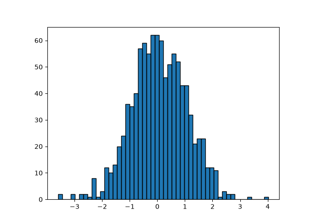

matplotlib.patches.Patch#
- class matplotlib.patches.Patch(*, edgecolor=None, facecolor=None, color=None, linewidth=None, linestyle=None, antialiased=None, hatch=None, fill=True, capstyle=None, joinstyle=None, hatchcolor=None, edgegapcolor=None, **kwargs)[source]#
Bases:
ArtistA patch is a 2D artist with a face color and an edge color.
If any of edgecolor, facecolor, linewidth, or antialiased are None, they default to their rc params setting.
The following kwarg properties are supported
Property
Description
a filter function, which takes a (m, n, 3) float array and a dpi value, and returns a (m, n, 3) array and two offsets from the bottom left corner of the image
unknown
bool
antialiasedoraabool or None
CapStyleor {'butt', 'projecting', 'round'}BboxBaseor Nonebool
Patch or (Path, Transform) or None
color or None
color or None
color or None
bool
str
{'/', '\', '|', '-', '+', 'x', 'o', 'O', '.', '*'}
unknown
color or 'edge' or None
bool
JoinStyleor {'miter', 'round', 'bevel'}object
{'-', '--', '-.', ':', '', ...} or (offset, on-off-seq)
float or None
bool
list of
AbstractPathEffectNone or bool or float or callable
bool
(scale: float, length: float, randomness: float)
bool or None
str
bool
float
- contains(mouseevent, radius=None)[source]#
Test whether the mouse event occurred in the patch.
- Parameters:
- mouseevent
MouseEvent Where the user clicked.
- radiusfloat, optional
Additional margin on the patch in target coordinates of
Patch.get_transform. SeePath.contains_pointfor further details.If
None, the default value depends on the state of the object:If
Artist.get_pickeris a number, the default is that value. This is so that picking works as expected.Otherwise if the edge color has a non-zero alpha, the default is half of the linewidth. This is so that all the colored pixels are "in" the patch.
Finally, if the edge has 0 alpha, the default is 0. This is so that patches without a stroked edge do not have points outside of the filled region report as "in" due to an invisible edge.
- mouseevent
- Returns:
- (bool, empty dict)
- contains_point(point, radius=None)[source]#
Return whether the given point is inside the patch.
- Parameters:
- point(float, float)
The point (x, y) to check, in target coordinates of
.Patch.get_transform(). These are display coordinates for patches that are added to a figure or Axes.- radiusfloat, optional
Additional margin on the patch in target coordinates of
Patch.get_transform. SeePath.contains_pointfor further details.If
None, the default value depends on the state of the object:If
Artist.get_pickeris a number, the default is that value. This is so that picking works as expected.Otherwise if the edge color has a non-zero alpha, the default is half of the linewidth. This is so that all the colored pixels are "in" the patch.
Finally, if the edge has 0 alpha, the default is 0. This is so that patches without a stroked edge do not have points outside of the filled region report as "in" due to an invisible edge.
- Returns:
- bool
Notes
The proper use of this method depends on the transform of the patch. Isolated patches do not have a transform. In this case, the patch creation coordinates and the point coordinates match. The following example checks that the center of a circle is within the circle
>>> center = 0, 0 >>> c = Circle(center, radius=1) >>> c.contains_point(center) True
The convention of checking against the transformed patch stems from the fact that this method is predominantly used to check if display coordinates (e.g. from mouse events) are within the patch. If you want to do the above check with data coordinates, you have to properly transform them first:
>>> center = 0, 0 >>> c = Circle(center, radius=3) >>> plt.gca().add_patch(c) >>> transformed_interior_point = c.get_data_transform().transform((0, 2)) >>> c.contains_point(transformed_interior_point) True
- contains_points(points, radius=None)[source]#
Return whether the given points are inside the patch.
- Parameters:
- points(N, 2) array
The points to check, in target coordinates of
self.get_transform(). These are display coordinates for patches that are added to a figure or Axes. Columns contain x and y values.- radiusfloat, optional
Additional margin on the patch in target coordinates of
Patch.get_transform. SeePath.contains_pointfor further details.If
None, the default value depends on the state of the object:If
Artist.get_pickeris a number, the default is that value. This is so that picking works as expected.Otherwise if the edge color has a non-zero alpha, the default is half of the linewidth. This is so that all the colored pixels are "in" the patch.
Finally, if the edge has 0 alpha, the default is 0. This is so that patches without a stroked edge do not have points outside of the filled region report as "in" due to an invisible edge.
- Returns:
- length-N bool array
Notes
The proper use of this method depends on the transform of the patch. See the notes on
Patch.contains_point.
- draw(renderer)[source]#
Draw the Artist (and its children) using the given renderer.
This has no effect if the artist is not visible (
Artist.get_visiblereturns False).- Parameters:
- renderer
RendererBasesubclass.
- renderer
Notes
This method is overridden in the Artist subclasses.
- property fill#
Return whether the patch is filled.
- get_aa()[source]#
Alias for
get_antialiased.
- get_data_transform()[source]#
Return the
Transformmapping data coordinates to physical coordinates.
- get_ec()[source]#
Alias for
get_edgecolor.
- get_edgegapcolor()[source]#
Return the edge gap color.
Added in version 3.11.
See also
set_edgegapcolor.
- get_fc()[source]#
Alias for
get_facecolor.
- get_ls()[source]#
Alias for
get_linestyle.
- get_lw()[source]#
Alias for
get_linewidth.
- get_patch_transform()[source]#
Return the
Transforminstance mapping patch coordinates to data coordinates.For example, one may define a patch of a circle which represents a radius of 5 by providing coordinates for a unit circle, and a transform which scales the coordinates (the patch coordinate) by 5.
- get_verts()[source]#
Return a copy of the vertices used in this patch.
If the patch contains Bézier curves, the curves will be interpolated by line segments. To access the curves as curves, use
get_path.
- get_window_extent(renderer=None)[source]#
Get the artist's bounding box in display space, ignoring clipping.
The bounding box's width and height are non-negative.
Subclasses should override for inclusion in the bounding box "tight" calculation. Default is to return an empty bounding box at 0, 0.
Warning
The extent can change due to any changes in the transform stack, such as changing the Axes limits, the figure size, the canvas used (as is done when saving a figure), or the DPI.
Relying on a once-retrieved window extent can lead to unexpected behavior in various cases such as interactive figures being resized or moved to a screen with different dpi, or figures that look fine on screen render incorrectly when saved to file.
To get accurate results you may need to manually call
savefigordraw_without_renderingto have Matplotlib compute the rendered size.- Parameters:
- renderer
RendererBase, optional Renderer used to draw the figure (i.e.
fig.canvas.get_renderer()).
- renderer
See also
Artist.get_tightbboxGet the artist bounding box, taking clipping into account.
- set(*, agg_filter=<UNSET>, alpha=<UNSET>, animated=<UNSET>, antialiased=<UNSET>, capstyle=<UNSET>, clip_box=<UNSET>, clip_on=<UNSET>, clip_path=<UNSET>, color=<UNSET>, edgecolor=<UNSET>, edgegapcolor=<UNSET>, facecolor=<UNSET>, fill=<UNSET>, gid=<UNSET>, hatch=<UNSET>, hatch_linewidth=<UNSET>, hatchcolor=<UNSET>, in_layout=<UNSET>, joinstyle=<UNSET>, label=<UNSET>, linestyle=<UNSET>, linewidth=<UNSET>, mouseover=<UNSET>, path_effects=<UNSET>, picker=<UNSET>, rasterized=<UNSET>, sketch_params=<UNSET>, snap=<UNSET>, transform=<UNSET>, url=<UNSET>, visible=<UNSET>, zorder=<UNSET>)[source]#
Set multiple properties at once.
a.set(a=A, b=B, c=C)
is equivalent to
a.set_a(A) a.set_b(B) a.set_c(C)
In addition to the full property names, aliases are also supported, e.g.
set(lw=2)is equivalent toset(linewidth=2), but it is an error to pass both simultaneously.The order of the individual setter calls matches the order of parameters in
set(). However, most properties do not depend on each other so that order is rarely relevant.Supported properties are
Property
Description
a filter function, which takes a (m, n, 3) float array and a dpi value, and returns a (m, n, 3) array and two offsets from the bottom left corner of the image
unknown
bool
bool or None
CapStyleor {'butt', 'projecting', 'round'}BboxBaseor Nonebool
Patch or (Path, Transform) or None
color or None
color or None
color or None
bool
str
{'/', '\', '|', '-', '+', 'x', 'o', 'O', '.', '*'}
unknown
color or 'edge' or None
bool
JoinStyleor {'miter', 'round', 'bevel'}object
{'-', '--', '-.', ':', '', ...} or (offset, on-off-seq)
float or None
bool
list of
AbstractPathEffectNone or bool or float or callable
bool
(scale: float, length: float, randomness: float)
bool or None
str
bool
float
- set_aa(aa)[source]#
Alias for
set_antialiased.
- set_alpha(alpha)[source]#
Set the alpha value used for blending - not supported on all backends.
- Parameters:
- alphafloat or None
alpha must be within the 0-1 range, inclusive.
- set_capstyle(s)[source]#
Set the
CapStyle.The default capstyle is 'round' for
FancyArrowPatchand 'butt' for all other patches.- Parameters:
- s
CapStyleor {'butt', 'projecting', 'round'}
- s
- set_color(c)[source]#
Set both the edgecolor and the facecolor.
- Parameters:
See also
Patch.set_facecolor,Patch.set_edgecolorFor setting the edge or face color individually.
- set_ec(color)[source]#
Alias for
set_edgecolor.
- set_edgegapcolor(edgegapcolor)[source]#
Set a color to fill the gaps in the dashed edge style.
Added in version 3.11.
Note
Striped edges are created by drawing two interleaved dashed lines. There can be overlaps between those two, which may result in artifacts when using transparency.
This functionality is experimental and may change.
- Parameters:
- edgegapcolorcolor or None
The color with which to fill the gaps. If None, the gaps are unfilled.
- set_fc(color)[source]#
Alias for
set_facecolor.
- set_hatch(hatch)[source]#
Set the hatching pattern.
hatch can be one of:
/ - diagonal hatching \ - back diagonal | - vertical - - horizontal + - crossed x - crossed diagonal o - small circle O - large circle . - dots * - stars
Letters can be combined, in which case all the specified hatchings are done. If same letter repeats, it increases the density of hatching of that pattern.
- Parameters:
- hatch{'/', '\', '|', '-', '+', 'x', 'o', 'O', '.', '*'}
- set_joinstyle(s)[source]#
Set the
JoinStyle.The default joinstyle is 'round' for
FancyArrowPatchand 'miter' for all other patches.- Parameters:
- s
JoinStyleor {'miter', 'round', 'bevel'}
- s
- set_linestyle(ls)[source]#
Set the patch linestyle.
- Parameters:
- ls{'-', '--', '-.', ':', '', ...} or (offset, on-off-seq)
Possible values:
A string:
linestyle
description
'-'or'solid'solid line
'--'or'dashed'dashed line
'-.'or'dashdot'dash-dotted line
':'or'dotted'dotted line
''or'none'(discouraged:'None',' ')draw nothing
A tuple describing the start position and lengths of dashes and spaces:
(offset, onoffseq)
where
offset is a float specifying the offset (in points); i.e. how much is the dash pattern shifted.
onoffseq is a sequence of on and off ink in points. There can be arbitrary many pairs of on and off values.
Example: The tuple
(0, (10, 5, 1, 5))means that the pattern starts at the beginning of the line. It draws a 10 point long dash, then a 5 point long space, then a 1 point long dash, followed by a 5 point long space, and then the pattern repeats.
For examples see Linestyles.
- set_ls(ls)[source]#
Alias for
set_linestyle.
- set_lw(w)[source]#
Alias for
set_linewidth.
- zorder = 1#
Examples using matplotlib.patches.Patch#


Controlling view limits using margins and sticky_edges


Plot a confidence ellipse of a two-dimensional dataset

Create boxes from error bars using PatchCollection



Building histograms using Rectangles and PolyCollections


SkewT-logP diagram: using transforms and custom projections